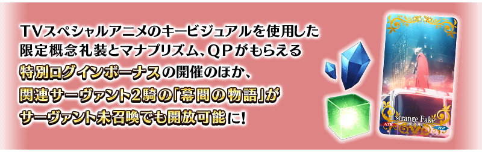
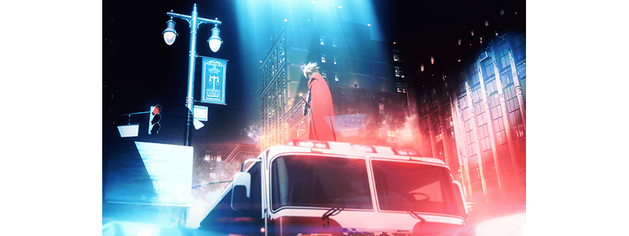
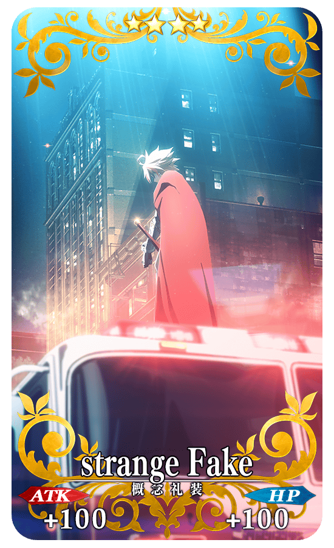
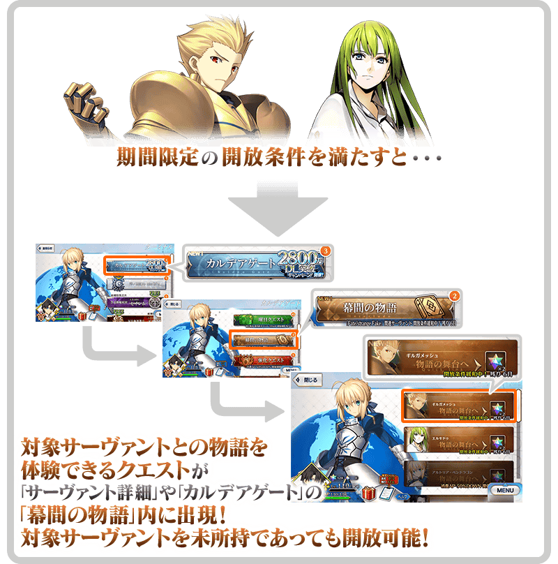

為了記念TV特別動畫「Fate/strange Fake -Whispers of Dawn-」自2023年7月2日(日)放送，舉辦『TV特別動畫「Fate/strange Fake -Whispers of Dawn-」放送記念宣傳活動』！
※本頁面皆為開發中圖片。會有與實際圖片相異的情況。
◆宣傳活動舉辦期間(1週內)◆
2023年6月30日(五) 17:00～7月7日(五) 11:59

TV特別動畫「Fate/strange Fake -Whispers of Dawn-」概要

【節目名】
Fate/strange Fake -Whispers of Dawn-
【放送時間】
TV
※放送時間有變更的可能性。
・TOKYO MX:2023年7月2日(日) 18:00～
・BS11:2023年7月2日(日) 18:00～
・栃木電視台:2023年7月2日(日) 18:00～
・群馬電視台:2023年7月2日(日) 23:30～
播送(有重播) ※播送時間有變更的可能性。 ・ABEMA:2023年7月2日(日) 18:00～ ・niconico生放送:2023年7月2日(日) 18:00～
【官方網站】 https://fate-strange-fake.com/
©成田良悟・TYPE-MOON/KADOKAWA/FSFPC
為了記念TV特別動畫「Fate/strange Fake -Whispers of Dawn-」的放送，實施特別登入獎勵。
y在期間中登入3次(1天算1次)的話，贈送魔力稜鏡50個、500萬QP、『TV特別動畫「Fate/strange Fake -Whispers of Dawn-」放送記念宣傳活動』限定概念禮裝「strange Fake」1張！
◆舉辦期間◆
2023年6月30日(五) 17:00～7月8日(六) 2:59
◆贈送對象◆
2023年7月7日(五) 2:59前通過「特異點F 炎上汙染都市 冬木」的御主對象
※上述時間前，在管理室(ターミナル)畫面的關卡橫幅必須要有「CLEAR」的文字顯示。
【特別次數登入獎勵】
| 登入次數 | 贈送內容 | |
|---|---|---|
| 第1次 |

|
魔力稜鏡 50個 |
| 第2次 |

|
500萬QP |
| 第3次 | ★4(SR)「strange Fake」 1張 | |
※第1次的登入獎勵會在6月30日(五) 17:00以後配發。 ※之後的登入獎勵會在每天3:00配發。 ※合計3天內能領取，但根據成為贈送對象的時間點，可能無法到此上限。
◆『TV特別動畫「Fate/strange Fake -Whispers of Dawn-」放送記念宣傳活動』限定概念禮裝◆
|  |
★★★★SR |
TV特別動畫「Fate/strange Fake -Whispers of Dawn-」關聯從者的「幕間物語」，以期間限定變成「就算未持有對象從者也能開放」！
「幕間物語」的開放條件也與平常時的開放條件不同，會變成期間限定的特別開放條件。
務必藉此機會通過對象從者的「幕間物語」吧！

◆舉辦期間(1週內)◆
2023年6月30日(五) 17:00～7月7日(五) 11:59
【對象從者・幕間物語】
| 對象從者 | 對象 「幕間物語」 |
通過報酬 | 期間限定開放條件 | |
|---|---|---|---|---|
| ★5(SSR) 吉爾伽美什(Archer) |
第1節 |
 |
聖晶石 2個 | 通過特異點F |
| 第2節 |
 |
寶具強化 | 通過幕間第1節&第四特異點 | |
| 第3節 |
 |
技能強化 | 通過幕間第2節&第五特異點 | |
| ★5(SSR) 恩奇都 |
第1節 |
|
聖晶石 2個 | 通過亞種特異點Ⅰ |
| 第2節 |
|
寶具強化 | 通過幕間第1節&第2部序幕「序」 | |
※對象從者有多個「幕間物語」的情況，全部幕間物語皆為對象。 ※在滿足期間限定的開放條件後通過「幕間物語」時未持有對象從者的情況，在入手對象從者的時間點會反映強化內容。 ※對象從者的「幕間物語」就算在未持有的狀態下通過的情況，會計算在Extra任務的進行度。 ※對象從者的「幕間物語」，在未通過的狀態超過舉辦期間的情況，對象從者的「幕間物語」會回到未開放，切換成平常的開放條件。 ※關卡通過時的報酬內容沒有變化。 ※已經通過對象從者的幕間物語的情況，無法再度遊玩。
【7月2日(日) 17:00追記】
其他還有，期間限定『TV特別動畫「Fate/strange Fake -Whispers of Dawn-」放送記念 Pick Up召喚』的情報公開中！
關於詳情，請自下述橫幅確認。
■『TV特別動畫「Fate/strange Fake -Whispers of Dawn-」放送記念 Pick Up召喚』詳細情報